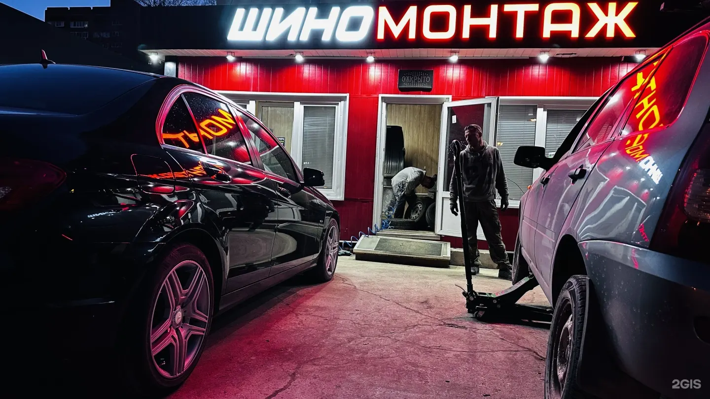
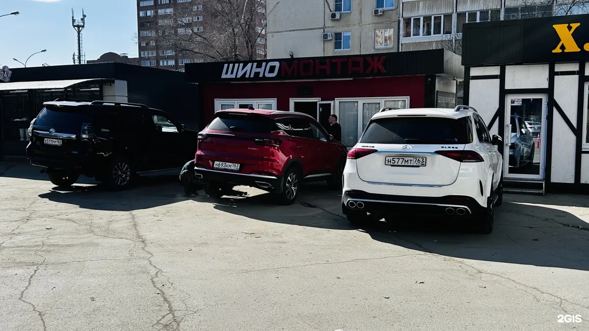
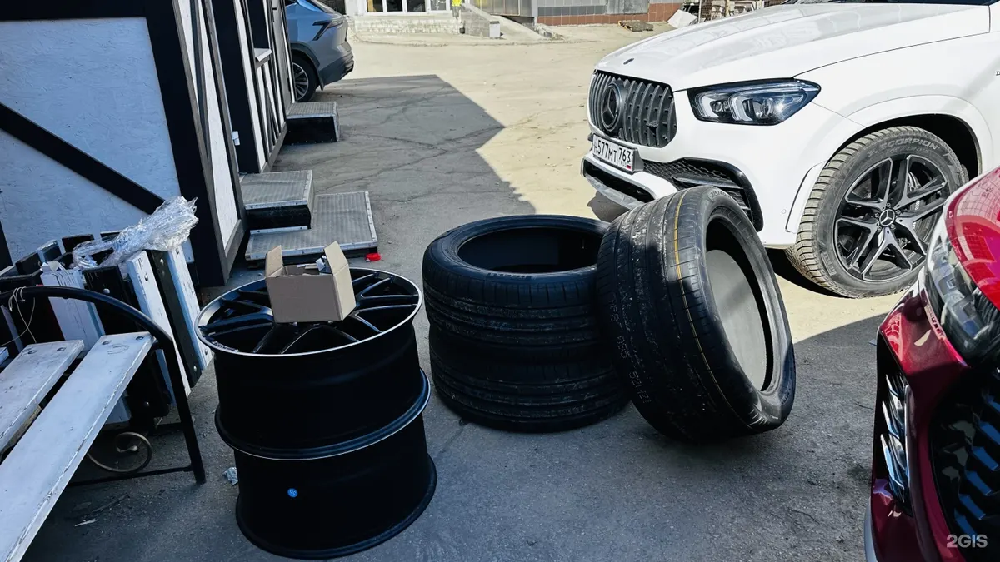

Шиномонтаж и диски в Тольятти
Шиномонтаж, правка и сварка дисков в Тольятти
Переобуем, выправим, заварим и покрасим диски, заделаем порез, ошипуем. Есть выездной шиномонтаж. Напишите в Telegram – подберём время.

- Пн–сб 09:00–20:00
- 5,0 в 2ГИС
- Открылись в марте 2026
Что делаем
Цену под ваш радиус и диск подскажем в сообщении.
Шины и диски
- Шиномонтаж и переобувкауточнить
- Правка и прокатка дисковуточнить
- Сварка дисковуточнить
- Покраска дисковуточнить
- Ремонт порезовуточнить
Ещё
- Выездной шиномонтажуточнить
- Ошиповка шинуточнить
- Продажа шин б/ууточнить
Как записаться
- 01
Напишите в Telegram
Машина, радиус и что нужно сделать.
- 02
Подберём время
Скажем, когда свободен мастер, и как подъехать.
- 03
Приезжайте
Или вызовите выездной шиномонтаж.
- 04
Оплата на месте
Наличными или переводом с карты.


За что нас хвалят в отзывах
Мастер, за которым едут
«Знаю Александра много лет, самый лучший мастер» – Анна Еремеева.
Быстро и аккуратно
«Качественно, быстро, и аккуратно» – Ашот Акопджанян.
Адекватные цены
«Отношение прекрасное, цены адекватные» – Самуэл Мартиросян.
Приедем сами
Колесо спустило вдали – есть выездной шиномонтаж.
Отзывы из 2ГИС
«Наконец-то появился нормальный шиномонтаж в центре района, обслуживание на высшем уровне, отношение прекрасное, цены адекватные.»
Самуэл Мартиросян · 19 марта 2026
«Знаю Александра много лет, самый лучший мастер. Везде за ним. Где он, там и я с машиной))»
Анна Еремеева · 26 марта 2026
«Сегодня менял колеса, очень сильно понравился. Качественно, быстро, и аккуратно, рекомендую 💪💪»
Ашот Акопджанян · 10 апреля 2026
Отзывы с карточки в 2ГИС, без правок.
Контакты
- Адрес
- Тольятти – точка на карте в 2ГИС
- Часы
- Пн–сб 09:00–20:00, вс выходной
- Телефон
- +7 917 124-20-00